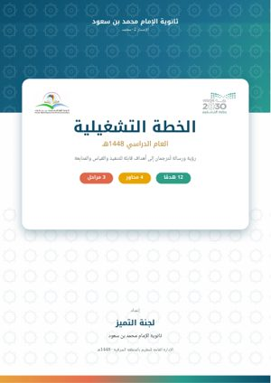
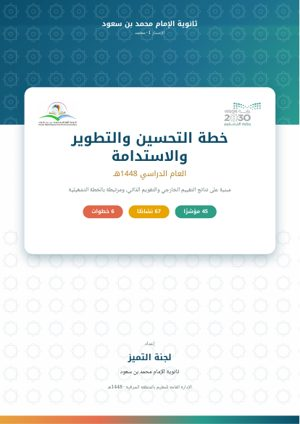

خطة التحسين والتطوير والاستدامة ١٤٤٨هـ
مبنية على نتائج التقييم الخارجي والتقويم الذاتي: ٤٥ مؤشرًا و٦٧ نشاطًا.
تحميل الخطةقبل الورشة: سبع صفحات تكفي
- ص ٤ و٥ الرؤية والرسالة، وكيف صارت محاور
- ص ٨ خريطة الأهداف الاثني عشر
- ص ١١ إلى ١٣ أهداف المرحلة الأولى التي نبدأ بها
الورشة: الخميس ٩ / ٦ / ١٤٤٨هـ · غرفة مصادر التعلّم